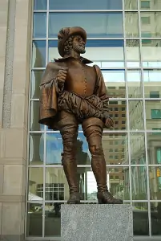
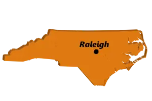

A Little About Raleigh...
Steeped in history, yet thoroughly up-to-date, the capital city of Raleigh is a wonderful blend of the old and new. Located in the middle of the state of North Carolina, it is a convenient location for those who wish to visit mountains or sea, just a few hours east or west. It also showcases many interesting spots of its own such as parks, museums, sports venues and teams, farmer's markets and award-winning restaurants. Raleigh also boasts several universities and colleges and is part of the cluster known as The Triangle, named for the triad formed by Durham, Chapel Hill and Raleigh. Home of Research Triangle Park, a well-known high-tech research and develpment center, Raleigh has many residents that are knowledgeable about cutting-edge technologies and methods. This means the Raleigh experience spans from its historic beginnings with the settlers of the state and country all the way to the ultra-modern, high-tech community it boasts of today.
